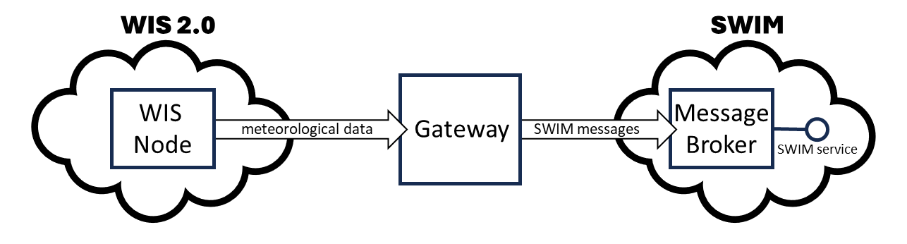

World Meteorological Organization |
Date: 2024-01-26 |
Version: 2.0.0alpha1 |
Document location: https://community.wmo.int/wis2-guide |
Standing Committee on Information Management and Technology (SC-IMT)[1] |
Commission for Observation, Infrastructure and Information Systems (INFCOM)[2] |
Copyright © 2024 World Meteorological Organization (WMO) |
- 1. PART I
- 2. PART II
- 3. PART III
- 4. PART IV
- 5. PART V
1. PART I
1.1. Introduction of WIS2
Since the Global Telecommunication System (GTS) entered operational life in 1971, it has been a reliable real-time exchange mechanism of essential data for WMO members.
In 2007, the WMO Information System (WIS) entered into operations to complement the GTS, providing a searchable catalogue and a global cache to enable additional discovery, access and retrieval. The success of WIS was limited as the system only partially met the requirement of providing simple access to WMO data. Today’s technology developed for the Internet of Things (IoT) opens the possibility of creating a WIS2 able to stand to its expectations of delivering an increasing number and volume of real-time data to WMO Centres in a reliable and cost effective way.
WIS2 has been designed to meet the shortfalls of the current WIS and GTS, support the WMO’s Unified Data Policy and the Global Basic Observing Network (GBON), and meet the demand for high data volume, variety, velocity and veracity.
WIS2 technical framework is based around three foundational pillars: leveraging open standards, simpler data exchange and cloud-ready solutions.
1.1.1. Leveraging open standards
WIS2 leverages open standards to take advantage of the ecosystem of technologies available on the market and avoid building bespoke solutions that can force NMHSs to procure costly systems and equipment. In today’s standards development ecosystem, standards bodies work closely together to minimise overlap and build on one another’s areas of expertise. For example, the World Wide Web Consortium provides the framework of Web standards, which the Open Geospatial Consortium and other standards bodies leverage. WIS2 leverages open standards with industry adoption and wider, stable, and robust implementations, thus extending the reach of WMO data sharing and lowering the barrier to access by Members.
1.1.2. Simpler data exchange
WIS2 prioritises public telecommunication networks, unlike private networks for GTS links. As a result, using the Internet will enable the best choice for a local connection, using commonly available and well-understood technology.
WIS2 aims to improve the discovery, access and utilisation of weather, climate and water data by adopting Web technologies proven to provide a truly collaborative platform for a more participatory approach. Data exchange using the Web also facilitates easy access mechanisms. Browsers and search engines allow Web users to discover data without specialised software. The Web also enables additional data access platforms, e.g. desktop GIS, mobile applications, forecaster workstations, etc. The Web provides access control and security mechanisms that can be utilised to freely share the core data per the WMO Unified Data Policy and protect the data with more restrictive licensing constraints. Web technologies also allow for authentication and authorisation for the provider to retain control of who can access published resources and to request users to accept a license specifying the terms and conditions for using the data as a condition for providing access to them.
WIS2 uses a "publish-subscribe" pattern where users subscribe to a topic to receive new data in real time. The mechanism is similar to WhatsApp and other messaging applications. It is a reliable and straightforward way to allow the user to choose her data of interest and to receive them reliably.
1.1.3. Cloud-ready solutions
The cloud provides reliable platforms for data sharing and processing. It reduces the need for expensive local IT infrastructure, which constitutes a barrier to developing effective and reliable data processing workflows for some WMO Members. WIS2 encourages WMO centres to adopt cloud technologies where appropriate to meet their users' needs. Whilst WMO technical regulations will not mandate cloud services, WIS2 will promote a gradual adoption of cloud technologies that provide the most effective solution.
The cloud-based infrastructure allows easy portability of technical solutions, ensuring that a system implemented by a specific country can be packaged and deployed easily in other countries with similar needs. In addition, using cloud technologies allows WIS2 to deploy infrastructure and systems efficiently with minimum effort for the NMHSs by shipping ready-made services and implementing consistent data processing and exchange techniques.
It should be clear that hosting data and services on the cloud does not affect data ownership. Even in a cloud environment, organisations retain ownership of their data, software, configuration, and change management as if they were hosting their infrastructure. As a result, data authority and provenance stay with the organisation, and the cloud is simply a technical means to publish the data.
1.1.4. Why are datasets so important?
WMO enables the international exchange of observations and model data for all Earth-system disciplines.
The WMO Unified Data Policy, Resolution 1 (Cg-Ext(2021)) [3], describes the Earth system data that are necessary for efforts to monitor, understand and predict the weather and climate - including the hydrological cycle, the atmospheric environment and space weather.
WIS is the mechanism by which this Earth system data is exchanged.
Common practice when working with data is to group them into "Datasets". All the data in a Dataset share some common characteristics. The Data Catalog Vocabulary (DCAT) defines a Dataset as a "collection of data, published or curated by a single agent, and available for access of download in one or more representations" [4].
Why is this important? The "single agent" (i.e., a single organisation) responsible for managing the collection ensures consistency among the data. For example, in a Dataset:
-
All the data should be of the same type (e.g., observations from weather stations).
-
All the data should be have the same license and/or usage conditions.
-
All the data should be subject to the same quality management regime - which may mean that all the data is collected or created using the same processes.
-
All the data should be encoded in the same way (i.e., using the same data formats and vocabularies).
-
All the data should be accessible using the same protocols - ideally from a single location.
This consistency means that one can predict what data is in a Dataset, at least as far as the common characteristics, making it easier to write applications to process the data.
A Dataset might be published as an immutable resource (e.g., data collected from a research programme), or it might be routinely updated (e.g., every minute as new observations are collected from weather stations).
A Dataset may be represented as a single, structured file or object (e.g., a CSV file where each row represents a data record) or as thousands of consistent files (e.g., output from a reanalysis model encoded as many thousands of GRIB files). Determining the best way to represent a Dataset is beyond the scope of this guide - there are many factors to consider! The key point here is that we consider the Dataset to be a single, identifiable resource irrespective of how it’s represented.
Because we group data into a single, conceptual resource (i.e., the Dataset) we can:
-
Give this resource an identifier, and use this identifier to unambiguously refer to collections of data.
-
Make statements about the Dataset (i.e., metadata), and infer that these statements apply to the entire collection.
All this means that the Dataset concept is central WIS:
-
We publish discovery metadata about Datasets, as specified in the WMO Core Metadata Profile [5].
-
We can search for Datasets that contain relevant data using the Global Discovery Catalogue.
-
We can subscribe to notifications about updates about a Dataset via a Global Broker.
-
We can access the data that comprises a Dataset from a single location using a well described mechanism.
It is up to the Data Publisher to decide how their data is grouped into Datasets - effectively, to decide what Datasets they publish to WIS. That said, we recommend that, subject to the consistency rules above, Data Publishers should organise their data into as few Datasets as possible.
For a Data Publisher, this means fewer discover metadata records to maintain. For a Data Consumer this means fewer topics to subscribe to and fewer places to access the data.
There are some things that are fixed requirements for Datasets:
-
All data in the Dataset must be accessible from a single location.
-
All data in the Dataset must be subject to the same license or usage conditions.
Here are some examples of Datasets:
-
The most recent 5-days of synoptic observations for an entire country or territory[6].
-
Long-term record of observed water quality for a managed set of hydrological stations.
-
Output from the most recent 24-hours of operational numerical weather prediction model runs.
-
Output from 6-months of experimental model runs. It’s important to note that output from the operational and experimental should not be merged into the same dataset because they use different algorithms - it’s very useful to be able to distinguish the provenance (or lineage) of data.
-
A multi-petabyte global reanalysis spanning 1950 to present day.
In summary, Datasets are important because they’re how data is managed in WIS.
1.2. Data consumer
As a Data Consumer wanting to use data published via WIS2 you should read the guidance presented here. In addition, a list of references to useful sections in this guidance document is provided where Data Consumers can gain a better understanding of how WIS2 works.
1.2.1. How to search the Global Discovery Catalogue to find Datasets
A Data Consumer may browse discovery metadata provided by the Global Discovery Catalogue to locate a Dataset of interest. Discovery metadata follows a standard scheme (see PART V Discovery Metadata TODO: fix ref). A Data Consumer may discover a Dataset using keywords, geographic area of interest, temporal information, or free text. Matching search results from the Global Discovery Catalogue provide high-level information (title, description, keywords, spatiotemporal extents, data policy, licensing, contact information), from which a Data Consumer can assess and evaluate their interest in accessing/downloading data associated with the Dataset record.
A key component of Dataset records in the Global Discovery Catalogue is that of "actionable" links. A Dataset record provides one to many links that clearly identify the nature and purpose of the link (informational, direct download, API, subscription) so that the Data Consumer can interact with the data accordingly. For example, a Dataset record may include a link to subscribe to notifications (see How to subscribe to notifications about availability of new data) about the data, or a API, or an offline archive retrieval service.
The Global Discovery Catalogue is accessible via an API and provides a low barrier mechanism (see Global Discovery Catalogue).
1.2.2. How to subscribe to notifications about availability of new data
A Data Consumer can subscribe to data notifications by searching the Global Discovery Catalogue and subscribing to notifications associated with a given Dataset, or by browsing the topics provided by a Global Broker to locate a Dataset of interest to them. Topic structures follow a standard scheme (see WIS2 Topic Hierarchy TODO: crossref). A Data Consumer can use the "canonical" link provided in a Data notification to directly download the associated data.
A Data Consumer may also discover more about the Dataset associated with a particular data notification by using the notification’s metadata identifier as a key to search the Global Discovery Catalogue.
Data Consumers should subscribe to receive "data availability" messages from Global Brokers. Exceptionally, a Data Consumer may choose to subscribe directly to the local message broker at the originating NC/DCPC – but note that the NC/DCPC may not provide public access to its local message broker. Data Consumers should not subscribe to the local message broker of Global Cache instances.
Real-time and near real-time data designated as "Core" in the WMO Unified Data Policy (Resolution 1) will be available from the Global Cache. As per clause 3.2.13 from the Manual on WIS, Vol II. Data Consumers should access data from the Global Cache.
When a Dataset is available from the Global Cache, its Dataset record will include a link to subscribe to "data availability" messages from the Global Cache instances. Data Consumers will subscribe to these "Global Cache" topics and not to the topic that contains messages from the originating NC/DCPC.
1.2.3. How to use a notification message to decide whether to download data
Each Global Cache will publish a "data availability" message as the associated data object becomes available from that Global Cache instance. Each "data availability" message will refer to the same logical data object but hosted at a different location within WIS. Data Consumers need to consider their strategy for managing these duplicate messages. From a data perspective, it does not matter which Global Cache instance is used – they will all provide an identical copy of the data object published by the originating NC/DCPC. The simplest strategy is to accept the first "data availability" message and download from the Global Cache instance that the message refers to (i.e., using a URL for the data object at that Global Cache instance). Alternatively, a Data Consumer may have a preferred Global Cache instance, for example, that is located in the Region. Whichever Global Cache instance is chosen, Data Consumers will need to implement logic to discard duplicate "data availability" messages.
1.2.4. How to download data
Dataset links are made available through Dataset discovery metadata (via the Global Discovery Catalogue) as well as data notification messages (via Global Brokers). Links can be used to directly download the data (according to the network protocol and content description provided in the link) using a mechanism appropriate to the workflow of the Data Consumer. This could include web and/or desktop applications, custom tooling, or other approaches. For data subscriptions, data notification messages provide a "cannonical" link to download the associated data object.
1.3. Data publisher
As a Data Publisher planning to operate a WIS2 Node, you should read the following sections: TODO: fix crossrefs * 1.2: What is WIS2? * 1.3 Why are Datasets so important? * PART III Data Metadata flows * PART X Information Management
1.3.1. How to publish Dataset discovery metadata to the Global Discovery Catalogue
A Data Producer publishes discovery metadata to the Global Discovery Catalogue by creating a discovery metadata record (see TODO: ref Discovery Metadata), making it available for download, and publishing a notification of its availability (see TODO: ref How to publish data notifications). Global Discovery Catalogues subscribed to the relevant topic via a Global Broker, receive the notification message and then validate, ingest, and publish the associated Dataset discovery metadata record.
1.3.2. How to publish data notifications
A Data Producer publishes data notifications by generating a notification message (see TODO: ref Notification messages) via a WIS2 Node in accordance with the WIS2 Topic Hierarchy. Global Brokers subscribe to WIS2 Nodes and then re-publish the data notification to any consumer with a corresponding subscription.
2. PART II
2.1. WIS2 Architecture
WIS2 is a federated system of systems based on Web-Architecture and open standards, comprising of many WIS2 Nodes for publishing data and Global Services that enable fault tolerant, highly available, low latency data distribution.
National Centres (NC), Data Collection and Production Centres (DCPC), and Global Information System Centres (GISC) are sll types of WIS Centre.
NCs and DCPCs operate WIS2 Nodes.
GISCs coordinate the operation of WIS within their Area of Responsibility (AoR) and ensure the smooth operation of the WIS2 system.
A WIS Centre may also operate one or more Global Services.
WIS Centres shall comply with the Technical Regulations defined in the Manual on WMO Information System (WMO-No. 1060), Volume II.
2.2. Roles in WIS2
When describing the functions of WIS2 there are four roles to consider:
-
Data Publisher:
-
This role is fulfilled by NC and DCPC.
-
Data Publishers operate a WIS2 Node to share their data within the WIS2 ecosystem.
-
Data Publishers manage, curate, and provide access to one or more "Datasets".
-
For each Dataset, a Data Publisher provides:
-
"Discovery metadata" to describe the Dataset, provide details on how it can be accessed, and under what conditions.
-
An API or Web-service to access (or interact with) the Dataset.
-
Notification messages advertising the availability of new data and metadata.
-
-
-
Global Coordinator:
-
This role is exclusive to GISCs.
-
All GISCs supporting WMO Members in their AoR fulfil their data sharing obligations via WIS2.
-
-
Global Service operator:
-
To ensure highly available global data exchange, a WIS Centre may operate one or more Global Services –
-
Global Discovery Catalogue: enables users to search all Datasets provided by Data Publishers and discover where and how to interact with those Datasets (e.g., subscribe to updates, access/download/visualize data, or access more detailed information about the Dataset).
-
Global Broker: provides highly available messaging services where users may subscribe to notifications about all Datasets provided by Data Publishers.
-
Global Cache: provides highly available download service for cached copies of core data downloaded from Data Publishers’ Web-services.
-
Global Monitor: gathers and displays system performance, data availability, and other metrics from all WIS2 Nodes and Global Services.
-
-
-
Data Consumer:
-
This role represents anyone wanting to find, access, and use data from WIS2 – examples include (but are not limited to): NMHS, government agency, research institution, private sector organisation, etc.
-
Searches or browses the Global Discovery Catalogue (or other search engine) to discover the Dataset(s) that meet their needs (i.e., "Datasets of interest").
-
Subscribes via the Global Broker to receive notification messages about the availability of data or metadata associated with Datasets of interest.
-
Determines whether the data or metadata referenced in notification messages is required.
-
Downloads data from Global Cache or WIS2 Node.
-
2.3. Specifications of WIS2
Leveraging existing open standards, WIS2 defines the following specifications in support of publish, subscribe, notification, and discovery:
| Specification | Granularity | Primary WIS2 Component(s) |
|---|---|---|
WMO Core Metadata Profile 2 (WCMP2) |
datasets |
Global Discovery Catalogue (GDC) |
WIS2 Topic Hierarchy (WTH) |
dataset granules |
Global Broker, WIS2 Nodes |
WIS2 Notification Message |
dataset metadata, dataset granules |
Global Broker, WIS2 Nodes |
2.4. Components of WIS2
-
WIS2 Node:
-
WIS2 Nodes are central to WIS2. These are operated by National Centres (NC) and Data Collection and Production Centres (DCPC) to publish their Core and Recommended data.
-
WIS2 adopts Web technologies and open standards enabling WIS2 Nodes to be implemented using freely-available software components and common industry practices.
-
WIS2 Nodes publish data as files of a Web server or using an interactive Web service.
-
WIS2 Nodes describe the data they publish using discovery metadata [TODO: ref. WIS Core Metadata Profile 2].
-
WIS2 Nodes generate notification messages [TODO: ref. WIS2 Notification Message] advertising the availability of new data. These notification messages are published to a message broker. The WIS2 Topic Hierarchy is used to ensure that all WIS2 Nodes publish to consistent topics. The information in the notification message tells the Data Consumer where to download data from. Notification messages are also used to advertise the availability of discovery metadata.
-
WIS2 Nodes may implement controlled access for the data they publish. Global Services will operate with fixed IP addresses, enabling WIS2 Nodes to easily distinguish their requests.
-
-
Global Broker:
-
WIS2 incorporates several Global Brokers, ensuring highly resilient distribution of notification messages across the globe.
-
A Global Broker subscribes to the message broker operated by each WIS2 Node and republishes notification messages.
-
A Global broker subscribes to notifications from other Global Brokers to ensure it receives a copy of all notification messages.
-
A Global Broker republishes notification messages from every WIS2 Node and Global Service.
-
A Global Broker operates a highly available, high-performance message broker.
-
A Global Broker uses the WIS2 Topic Hierarchy enabling a Data Consumer to easily find topics relevant to their needs.
-
Data Consumers should subscribe to notifications from a Global Broker not directly to the message brokers operated by WIS2 Nodes.
-
-
Global Cache:
-
WIS2 incorporates several Global Caches, ensuring highly resilient distribution of data across the globe.
-
A Global Cache provides a highly available data server from which a Data Consumer can download Core data, as specified in the WMO Unified Data Policy, Resolution 1 (Cg-Ext(2021)).
-
A Global Cache subscribes to notification messages via a Global Broker.
-
On receipt of a notification message, the Global Cache downloads from the WIS2 Node a copy data referenced in the notification message, makes this copy available on its data server, and publishes a new notification message advertising availability of this data at the Global Cache.
-
A Global Cache will subscribe to notification messages from other Global Caches enabling it to download and republish data it has not acquired directly from WIS2 Nodes. This ensures that each Global Cache holds data from every WIS2 Node.
-
A Global Cache shall retain a copy of core data for a duration compatible with the real-time or near real-time schedule of the data and not less than 24-hours.
-
A Global Cache will delete data from the cache once the retention period has expired.
-
Data Consumers should download data from a Global Cache when available.
-
-
Global Discovery Catalogue:
-
WIS2 includes several Global Discovery Catalogues.
-
A Global Discovery Catalogue enables a data consumer to search and browse descriptions of data published by each WIS2 Node. The data description (i.e., discovery metadata) provides sufficient information to determine the usefulness of data and how one may access it.
-
A Global Discovery Catalogue subscribes to notification messages via a Global Broker about the availability of new (or updated) discovery metadata. It downloads a copy of the discovery metadata and updates the catalogue.
-
A Global Discovery Catalogue will amend discovery metadata records to add details of where one can subscribe to updates about the Dataset at a Global Broker.
-
A Global Discovery Catalogue makes its content available for indexing by search engines.
-
-
Global Monitor:
-
WIS2 includes a Global Monitor service.
-
The Global Monitor collects metrics from WIS2 components.
-
The Global Monitor provides a dashboard that supports operational management of the WIS2 system.
-
The Global Monitor tracks:
-
What data is published by WIS2 Nodes.
-
Whether data can be effectively accessed by Data Consumers.
-
The performance of components in the WIS2 system.
-
-
2.5. Protocols configuration
2.5.1. Publish-Subscribe protocol (MQTT)
-
The MQTT protocol is to be used for all WIS2 Publish-Subscribe workflow (publication and subscription).
-
MQTT v3.1.1 and v5.0 are the chosen protocols for the WIS2 Notification Messages publication and subscription.
-
To connect to Global Brokers, MQTT v5.0 is preferred as it provides additional features such as the ability to used shared subscription.
-
-
The following parameters are to be used for all MQTT client/server connectivity and subscription:
-
Message retention: false
-
Quality of Service (QoS) of 1
-
A maximum of 2000 messages to be held in a queue per client
-
-
In order to permit authentication and authorization for users, WIS2 Node, Global Cache, Global Discovery Catalogue and Global Brokers shall use a user and password based mechanism.
-
To improve the overall level of security of WIS2, the secure version of the MQTT protocol is preferred. If used, the certificate must be valid.
-
The standard TCP ports to be used are 8883 for Secure MQTT (MQTTS) and 443 for Secure Web Socket (WSS).
2.5.2. Download protocol (HTTP)
-
The HTTP protocol is to be used for all WIS2 download workflow.
-
To improve the overall level of security of WIS2, the secure version of the HTTP protocol is preferred. If used, the certificate must be valid.
-
The standard TCP port to be used is 443 for Secure HTTP (HTTPS).
2.6. Implementation and operation of a WIS2 Node
2.6.1. Practices and procedures
2.6.1.1. Registration and decommissioning of a WIS2 Node
Registration and decomissioning of WIS2 Nodes must be approved by the PR for the centre registering or decomissioning a WIS2 Node.
WMO Secretariat will operate a WIS2 register. The registration of a WIS2 Node involves the following steps:
-
Request hosting a WIS2 Node: A request for hosting a WIS2 Node shall be put forward by the Permanent Representative of the country of the WIS2 Node host centre, or, in the case of international organizations, by either the Permanent Representative (PR) of the country where the WIS2 Node host centre is located or the president of the relevant organization in case of WMO partner or programme designated as DCPC.
-
Assign a centre-id: The centre identifier (
centre-id) is an acronym as specified by the member and endorsed by the PR of the country and WMO. It is a single identifier comprised of a top level domain (TLD) and centre name, and represents the data publisher, distributor or issuing centre of a given dataset or data product/granule (see the Topic Hierarchy Manual on WIS Vol II). -
Complete the WIS2 Register: The WIS National Focal Point shall complete the WIS2 Register operated by the WMO Secretariat
-
WIS2 Node assessment: the principal GISC verifies that the WIS2 Node is compliant with WIS2 requirements. The assessment includes:
-
the verification of the compliance of the WIS2 Topic Hierarchy (WTH) used by the centre with the WIS2 Topic Hierarchy.
-
verification of compliance of the Notification Message with the specifications.
-
verification that the download link is using HTTPS which is a preference for WIS2.
-
Upon completion of this verification, and confirmation that it satisfies all conditions for operating a WIS2 Node, GISC notifies WMO and confirms that this centre identifier can be added to WIS2.
-
Communicate details to the Global services: WMO Secretariat provides the WIS2 Node details to the Global Brokers to subscribe to the WIS2 Node.
A diagram of the process of registering a WIS2 Node is presented below.

2.6.1.2. Registration and removal of a dataset
Procedure for PR Approved WIS2 Node Registration is to create a centre identifier based on naming convention ab-domain-nodename. Where ab is the the IANA Top Level Domain (TLD) code, domain is the organization’s domain name for the main website, and nodename (optional) is descriptive of the purpose of the WIS2 Node (for example a node for a type of data or programme of the data e.g. climate, aviation, etc.) when the organization is hosting multiple WIS2 Nodes. A sample centre identifier is ab-myorg-climate. In addition to the centre identifier the registering organization should also provide the broker endpoints. Once centre identifier and broker endpoints are provided and entered into the WIS2 Node register, the WMO Secretariat will contact the GISC for the organization’s country and request the GISC to verify the correctness of the provided information. The GISC will request the centre produce a test message with associated files for download. The GISC should use a test MQTT client to verify the notification message is correct and the download links are functional. The GISC notifies the Centre of the results of the checks and if all are good, requests the Centre to provide metadata when the dataset is ready. When metadata is proivided the GISC informs the WMO Secretariat that the new centre identifier is ready and requests it be added to WIS2.
In the case of NCs, the procedure for PR approved decomissioning of a WIS2 Node is the PR (or designate) will notify the WMO Secretariat of the decomissioning of the WIS2 Node. In the case of DCPCs, the sponsor (i.e., Regional Association or WMO Programme) is the Programme Chair or Regional Information Management Chair shall approve the decommissioning and notify the WMO Secretariat of the decomissioning of the WIS2 Node. Where possible, a 30 day notice period should be provided prior to the decomissioning and information on if the data from the Node will also be decomissioned or if it is available via another WIS2 Node or method. The WMO Secretariat will notify the GISC for the country and the Global Service Providers of the date of the WIS2 Node decomissioning.
NC/DCPCs operators decomissioning a WIS2 Node shall ensure that obligations relating to data sharing within WIS continue to be met after the WIS2 Node is decommissioned, for example, by migrating these data sharing obligations to another WIS2 Node. In the case of DCPCs, this may mean the WIS2 Node responsibilities shift from one member to another and in the case these details should be included in the decomissioning notice to the WMO Serectariat.
A Data Producer publishes data via a WIS2 Node in accordance with the WIS2 Topic Hierarchy by creating a discovery metadata record, making it available for download, and publishing a notification of its availability (see how to publish data notifications TODO CROSSREF). Global Brokers then subscribe to the relevant topic, receive the notification message, and then validate, ingest, and publish the associated dataset record.
All data shared in WIS2 must include metadata compliant with the metadata requriements described below. Data providers must be approved by their PR (or designate such as the member’s WIS Focal Point) to ensure quality metadata will be provied along with the data.
An organization ready to publish a new dataset should contact the WMO Secretariat with the approval of their PR (or designate) to The WMO Secretariat. The WMO Secretariat will contact the GISC for the organizaiton with the new (meta)data. The GISC will work with a Global Discovery Catalogue to verify the metadata. the GDC will publish a report indicating errors and/or potential improvements (based on discovery metadata KPIs). The GISC should work with the data publisher to remedy issues and incporate suggestions for improvement.
In addition, the data publisher’s affiliated GISC conduct a systematic review of what’s being published to make sure everything is functional.
2.6.1.3. Connecting with Global Services
Once a WIS2 Node has been verified by a GISC and endpoints and metadata are available, the WMO Secretariat provides the new centre identifier to the Global Brokers and requests they subscribe to the new broker endpoint. The Global Broker will recieve the data based on their topic subscriptions. The Global Caches download and cache the metadata (and data where applicable for core datasets).
Once a GISC, in partnership with a Global Data Catalogue, verifies the metadata for a new dataset, the WMO Secretariat will be notified of the availability of the new dataset. The WMO Seretariat will then notify the Global Borkers and Global Caches of the addition of new data to the WIS system.
2.6.2. Publishing data, discovery metadata, and notification messages
2.6.2.1. Discovery metadata
Discovery metadata shall be encoded according to the WMO Core Metadata Profile version 2 (WCMP2).
Discovery metadata may be published one of two ways. The simplest method is to encode the discovery metadata record as a file and publish it to an HTTP server. The URL of this file is included in the notification message advertising the availability of new metadata. Alternatively, a data publisher may choose to host a local catalogue themselves, enabling them to share discovery metadata records through an API (e.g., OGC API - Records). In this case, the URL used in the notification message will refer to the API endpoint identifying the specific discovery metadata record (e.g., an item as part of their discovery metadata catalogue).
These discovery metadata records are then propagated through the Global Service components into to the Global Discovery Catalogue where Data Consumers can search and browse for datasets of interest.
Discovery metadata must be published before data is published to WIS2.
TODO: to be completed
2.6.2.2. Notification messages
There is no requirement for an NC/DCPC to publish "data availability" notification messages relating to infrequently changing datasets, such as a data archive, especially where the user community have no requirement to be instantly updated about changes to a dataset (e.g., the addition of new records into a climate observation archive). Data publishers should note that without providing notification messages their data will not be copied into the Global Cache. However, since the Global Cache only holds real-time (or near real-time) datasets, this is not a concern for data publishers with infrequently changing datasets.
TODO: to be completed
2.6.2.3. Data
WIS2 provides the "plumbing" for data sharing within the WMO community, but it defines neither which data to share, nor how that data should be encoded. WIS Centres need to evaluate WMO Programme requirements and the WMO Unified Data Policy to determine which datasets should be made available through WIS.
WMO Technical Regulations may require that data is encoded in particular formats. For example: synoptic observations should be encoded in BUFR. The Manual on Codes (WMO No. 306) provides details of data formats formally approved for use in WMO.
However, Technical Regulations don’t cover all data sharing requirements. In such cases, data publishers should select data formats that are widely adopted and understood in their target user community.
WIS2 does not require the use of specific file-naming conventions. Where communities commonly use file-naming conventions (e.g., with embedded metadata), data publishers should ensure that adequate documentation is provided to users. data publishers cannot assume that users will understand (or respect) their file-naming rules – many Data Consumers will simply treat the filename as an opaque string.
Data publishers also have choices about how they publish data.
As a minimum, data publishers may publish data objects (e.g., the atomic bits of data that comprise a dataset) as files using a Web server (HTTP protocol) or FTP server (FTP protocol), using secure communications (e.g., HTTPS/SFTP). As each data object is published, a notification message should also be published to a topic in a message broker (see 4.3 Notification message format and structure, and WIS2 messages 4.4 WIS2 Topic Hierarchy TODO: CROSSREF).
A dataset (for example, a collection of climate model runs) may comprise thousands or more files. A data publisher may choose to provide users with a mechanism to browse through the set of files, enabling them to identify those which are relevant to them. Examples of such mechanisms include, but are not limited to:
-
Web Accessible Folders (WAF): a Web-based folder structure listing the data object files by name
-
SpatioTemporal Asset Catalog (STAC): a community standard based on GeoJSON to describe geospatial data files which can be easily indexed, browsed, and accessed. Free and open sourcr tools tools present STAC records (one for each data object file) through a Web-based, browse-able user interface
WAFs and STAC are provided to illustrate options. There is no requirement for a data publisher to provide any such browse-able user interface to their data.
Increasingly, interactive Web APIs are being used to provide access to datasets. Although requiring a little more sophistication to implement, a Web API provides significant advantages:
-
Data Consumers can select and download only the parts of a dataset that they need – providing them will a smaller dataset subset to work with and reducing the burden on the data publisher’s network infrastructure.
-
Data Consumers are insulated from the complexities of how a data publisher chooses to persist their data. The Web API can provide access to datasets in a way that is easy for users to understand.
-
A Web API may allow Data Consumers to download data in their preferred file format or encoding.
WIS-TECHSPEC-2 states:
4.3.3 URLs provided for accessing core data, as defined in WMO Unified Data Policy (Res. 1), and discovery metadata shall be directly resolvable, i.e., data or discovery metadata can be downloaded simply by resolving the given URL without further action, such as populating elements of an API, is required.
When using a Web API to publish "core" data, the URL included in the data availability notification message must be directly resolvable, i.e., the Data Consumer must not be required to complete any additional fields in the API request. This can be achieved by identifying the data object in the URL. A Data Consumer or a Global Cache instance can simply resolve the URL to download the data object regardless of the manner in which it is made available.
WIS2 seeks to leverage the experience of data publishers who have been using Web APIs to serve their communities.
First, interactive Web APIs should be self-describing. A Data Consumer should not need to know, apriori, how to make requests from a Web API. They should be able to discover this information from the Web API endpoint itself – even if this is just a link to a documentation page they need to read.
Second, we recommend that Web APIs are compliant with OpenAPI version 3 or later. OpenAPI provides a standardised mechanism to describe the API. Effectively, OpenAPI provides metadata that describes the Web API endpoint. Tooling (free and, commercial, etc.) is widely available that can read this metadata and automatically generate client applications to query the Web API.
Third, the Open Geospatial Consortium (OGC) have developed a suite of APIs (called "OGC APIs") that are designed specifically to provide APIs for geospatial data workflows (discovery, vizualisation, access, processing/exploitation) – all of which build on OpenAPI v3. Among these, OGC API – Environmental Data Retrieval (EDR), OGC API – Features, and OGC API - Coverages are considered particularly useful. Because these are open standards, there is an ever-growing suite of software implementations (both free and proprietary) that support them. We recommend that data publishers assess these open-standard API specifications to determine their suitability to for publishing their datasets using APIs.
Finally, we are increasingly concerned with providing access to very large datasets. The OGC has published a series of informative blogs on the subject of cloud-native geospatial data sharing. These are listed among in section 11.4.2 Informative References TODO PROPER CROSSREF.
Publication and topic selection
When publishing a dataset, a data publisher selects a given topic according to the WIS Topic Hierarchy. Given the multidisciplinary nature of some data, a data publisher must select a single topic for publication purposes, and always uses WCMP2 discovery metadata to provide a fulsome description of their dataset and its relevance to additional disciplines.
Metadata is the method by which datasets are ultimately made available in the WIS2 system. The goal is for data providers who have PR authorization to have a lightweight method to provide their datasets to WIS. With this goal in mind, there are several acceptable methods to publish metadata:
-
Option 1: deploy a WIS2 node
-
Option 2: a MQTT broker and HTTP server
-
Option 3: a bilateral agreemnt for another organization to publish metadata publication on behalf of the data provider (potential organizations providing this service are GISCs and NMHS or potentional through a WIS2 portal in the future).
For infrequently updated datasets the following process should be followed:
-
Publish initial metadata
-
Publish update metadata
-
Data update notification: normal notification message with
property.cache=false
2.6.2.4. Use of the "experimental" topic
The "experimental" topic is necessary for the WIS2 pre-operational phase and future pre-operational data exchange in test mode.
The experimental topic sits under domain (level 8), e.g. …weather/experimental. Data publishers can can extend the experimental branch with sub-topics as they deem appropriate.
Data consumers must not assume that experimental topics will be durable (i.e., they may change or be removed).
2.6.3. Performance management
2.6.3.1. Service levels and performance indicators
A WIS2 Node must be able to:
-
Publish datasets and compliant metadata and discovery metadata
-
Publish metadata to the Global Data Catalogue
-
Publish core data to the Global Cache
-
Publish data for consumer access
-
Publish data embedded in a message (i.e., CAP warnings)
-
Receive metadata publication errors from the Global Data Catalogue
-
Provide metadata with topics to Global Brokers
-
2.6.3.2. Provision of system performance metrics
WIS2 Nodes should provide annual performance metrics to their GISC.
If contacted by the Global Montior via GISC for a performance issue, the WIS2 Node should provide metrics to the GISC and Global Monitor when service is restored to indicate resolution of the issue.
2.6.4. WIS2 Node reference implementation: wis2box
To provide a WIS2 Node, members may use whichever software components they consider most appropriate to comply with WIS2 Technical Regulations.
To assist Members participate in WIS2, a free and open-source Reference Implementation is available for use. WIS2 in a box (wis2box) implements the requirements of a WIS2 Node in as well as additional enhancements. wis2box builds on mature and robust free and open-source software components that are widely adopted for operational use.
wis2box provides functionality required for both data publisher and data consumer roles. It provides the following technical functions:
-
Configuration, generation and publication of data (real-time or archive) and metadata to WIS2, compliant to WIS2 Node requirements
-
MQTT Message Broker and notification message publication (Subscribe)
-
HTTP object storage and raw data access (Download)
-
Station metadata curation / editing tools (user interface)
-
Discovery metadata curation / editing tools (user interface)
-
Data entry tools (user interfaces)
-
OGC API server, providing dynamic APIs for discovery, access, visualization and processing functionality (APIs)
-
Extensible data "pipelines", allowing for transformation, processing and publishing of additional data types
-
Provision of system performance and data availability metrics
-
Access control for recommended data publication, as required
-
Subscription to notifications and and download of WIS data from Global Services
-
Modular design, allowing for extending to meet additional requirements or integrate with existing data management systems
Project documentation can be found at https://docs.wis2box.wis.wmo.int
wis2box is managed as a free and open source project. Source code, issue tracking and discussions are hosted in the open on GitHub: https://docs.wis2box.wis.wmo.int.
2.7. Implementation and operation of a Global Service
2.7.1. Procedure for registration of a new Global Service
Successful operations of WIS will depend on having a set of Global Services running state of the art IT environments, with a very high level of reliability so that all WIS Users and WIS2 Nodes will be able to access and provide data they need for their duties.
Depending on the nature of the Global Service, the following is considered to be the minimum capability of Global Service operation, so that collectively, the level of service is 100% (or very close):
-
Three (3) Global Brokers: Each Global Broker connected to at least two (2) other Global Brokers
-
Three (3) Global Caches: Each Global Cache connected to at least two (2) Global Broker and should be able to download the data from all WIS2 Nodes providing Core data
-
Two (2) Global Discovery Catalogues: Each Global Discovery Catalogue connected to at least one (1) Global Broker
-
Two (2) Global Monitors: Each Global Monitor should scrape the metrics from all WIS2 Nodes and all other Global Services
In addition to the above, WIS architecture can accomodate adding (or removing) Global Services. Candidate WIS Centres should inform their WIS Focal Point and contact the WMO Secretariat to discuss their offer to provide a Global Service.
Running a Global Service is a significant commitment for a WIS Centre. To maintain a very high level of service of WIS, each Global Service will have a key role to play.
WMO Secretariat, based on the current situation of WIS (How many Global Brokers ? A need for additional Cache ?), will propose to the WIS Centre the preferred solution to improve the overall level of service of WIS.
The availability of data and performance of system components within WIS2 are actively monitored by GISCs and the Global Monitor service to ensure proactive response to incidents and effective capacity planning for future operations.
WIS2 requires that metrics are provided using OpenMetrics – the de-facto standard [7] for transmitting cloud-native metrics at scale. Widely adopted, many commercial and open-source software components already come preconfigured to provide performance metrics using the OpenMetrics standard. Tools such as Prometheus and Grafana provide aggregation and visualisation of metrics provided in this form, making it simple to generate performance insights. The OpenMetrics standard can be found at openmetrics.io [8].
The WIS2 Global Services, namely the Global Broker, Global Cache, and Global Discovery Catalogue expose monitoring metrics on their respective service to the Global Monitor.
There is no requirement on WIS2 Nodes to provide monitoring metrics. However their WIS2 interfaces may be queried remotely by Global Services, which in turn can provide metrics on the availability of WIS2 Nodes.
Metrics for the WIS2 monitoring should follow the naming convention:
wmo_<program>_<name>
where program is the name of the responsible WMO Program and name is the name of the metric. Examples for WIS2 metrics can look like
wmo_wis2_gc_downloaded_total
wmo_wis2_gb_messages_invalid_total
The full set of the WIS2 monitoring metrics is given in WMO: WIS2 Metric Hierarchy [9]
The Manual on WIS, the Guide and other material available will help WIS Centres in deciding the best way forward.
When decided, the WIS Focal Point will inform WMO Secretariat of its preference. Depending on the type of Global Service, WMO Secretariat will provide a checklist to the WIS Centre so that the future Global Service can be included in WIS Operations.
-
There will be multiple Global Broker instances to ensure highly available, low latency global provision of messages within WIS.
-
A Global Broker instance subscribes to messages from NC/DCPCs and other Global Brokers
-
A Global Broker instance will subscribe to messages from a subset of NC/DCPCs and republish them.
-
At least one Global Broker will subscribe to messages from every NC/DCPC.
-
For full global coverage, a Global Broker instance will subscribe to messages from other Global Broker instances and republish them.
-
A Global Broker instance will republish a message only once – noting that a particular message may be received multiple times (e.g., from different sources). Discarding duplicate messages is referred to as "anti-loop".
-
It is not required that a Global Broker instance republishes messages from all other Global Brokers (e.g., establishing ‘fully meshed’ connection). However, it is essential that messages propagate through WIS efficiently and effectively, from originating NC/DCPC to Data Consumers in all Regions. Consequently, it is recommended that topological distance between every Global Broker shall not exceed 3 "hops" (i.e., a message received at a Global Broker shall be republished by no more than 3 other Global Brokers on its route from the originating NC/DCPC). Connectivity between Global Brokers will be recommended by Experts from INFCOM/SC-IMT.
-
Global Brokers use distinct "channels" to keep messages from originating NC/DCPC separate from messages originating from Global Cache instances. This is implemented in using the top-level ("channel") of the topic structure (see [standard-topic-hierarchy]).
-
WIS2 Topic Hierarchy
-
A Global Broker will validate notification messages against the standard format (see [notification-message-format-and-structure]), discarding non-compliant messages and raising an alert.
-
A Global Broker is built around two software components:
-
An off the shelf broker implementing both MQTT 3.1.1 and MQTT 5.0 in a highly-available setup (cluster). Tools such as EMQX, HiveMQ, VerneMQ are compliant with these requirements.
-
Additional features (anti-loop, message format compliance,…) are required. An open source implementation will be made available during the pilot phase.
-
-
A WIS Centre must commit to running the Global Service for a minimum of four (4) years.
WMO Secretariat and other Global Services will make the required changes to include the new Global Service in WIS Operations.
2.7.2. Performance management and monitoring of a Global Service
2.7.2.1. Service levels, performance indicators, and fair-usage policies
-
Each WIS Centre operating a WIS2 Node will be responsible in achieving the highest possible level of service based on their resources and capabilities.
-
All Global Services, and in particular Global Brokers and Global Caches, are collectively responsible in making the WIS a reliable and efficient mean to exchange data required for the operations of all WIS Centres. The agreed architecture provides a redundant solution where the failure of one component will not impact the overall level of service of WIS.
-
Each Global Service should aim at achieving at least 99.5% availibility of the service they propose. This is not a contractual target. It should be considered by the entity providing the Global Service as a guideline when designing and operating the Global Service.
-
A Global Broker:
-
should support a minimum of 200 WIS2 Nodes or Global Services
-
should support a minimum of 1000 subscribers.
-
should support processing of a minimum of 10000 messages per second
-
-
A Global Cache:
-
should support a mimimum of 100 GB of data in the cache
-
should support a minimum of 1000 simultaneous downloads
-
could limit the number of simultaneous connections from a user (known by its originating source IP) to 5
-
could limit the bandwidth usage of the service to 1Gb/s
-
-
A Global Monitor:
-
should support a minimum of 50 metrics providers
-
should support 200 simultaneous access to the dashboard
-
could limit the bandwidth usage of the service to 100Mb/s
-
-
A Global Discovery Catalogue:
-
should support a minimum of 20000 metadata records
-
should support a minimum of 50 requests per second to the API endpoint
-
2.7.3. Global Broker
2.7.3.1. Technical considerations
-
As detailed above, there will be at least three (3) instances of Global Broker to ensure highly available, low latency global provision of messages within WIS.
-
A Global Broker instance subscribes to messages from WIS Centres, Global Caches and other Global Brokers. The Global Broker should aim at subscribing to all WIS Centres. If this is not possible, for whatever reason, the Global Broker should inform WMO Secretariat so that situation is documented.
-
Every WIS Centre or Global Service must have subscriptions from at least two Global Brokers.
-
For full global coverage, a Global Broker instance will subscribe to messages from at least two (2) other Global Brokers.
-
A Global Broker is built around two software components:
-
An off the shelf broker implementing both MQTT 3.1.1 and MQTT 5.0 in a highly-available setup, typically in a cluster mode. Tools such as EMQX, HiveMQ, VerneMQ, RabbitMQ (in its latest versions) are compliant with these requirements. It must be noted that the open source version of Mosquitto cannot be clustered and therefore should not be used as part of a Global Broker.
-
Additional features including anti-loop detection, notification message format compliance, validation of the published topic, and provision of metrics are required.
-
-
When receiviong a message from a WIS Centre or Global Service broker, The metric
wmo_wis2_gb_messages_received_totalwill be increased by 1. -
A Global Broker will check if the topic on which the message is received is valid (in particular, a discovery metadata record must exist with a corresponding topic in order that data can be made available using this topic). If the topic is invalid, the Global Broker will discard non-compliant messages and will raise an alert. The metric
wmo_wis2_gb_messages_no_metadata_totalwill be increased by 1. Global Broker should not request Global Discovery Catalogue for each notification message but should keep a cache of all valid topics for everycentre-id. -
During the pre-operational phase (2024), Global Broker will not discard the message but will send a message on the
monitortopic hierarchy to inform the originating centre and its GISC. -
A Global Broker will validate notification messages against the standard format (see Notification message format and structure), discarding non-compliant messages and raising an alert. The metrics
wmo_wis2_gb_messages_invalid_totalwill be increased by 1. -
A Global Broker instance will republish a message only once. Using the message id as defined in WIS Notification Message, the Global Broker will record id of messages already published and will discard subsequent identitical (with the same message id) messages. This is the anti-loop feature of the Global Broker.
-
When publishing a message to the local broker, the metric
wmo_wis2_gb_messages_published_totalwill be increased by 1. -
All aboved defined metrics will be made avalaible on HTTPS endpoints that the Global Monitor will ingest from regularly.
-
As a convention Global Broker centre-id will be
tld-{centre-name}-global-broker. -
A Global Broker should operate with a fixed IP address so that WIS2 Nodes can permit access to download resources based on IP address filtering. A Global Broker should also operate with a public resolvable DNS name pointing to that IP address. The WMO Secretariat must be informed of the IP address and/or host name, and any subsequent changes.
2.7.3.2. Metrics for Global Brokers
The defined metrics for Global Brokers can be found here https://raw.githubusercontent.com/wmo-im/wis2-metric-hierarchy/main/metric-hierarchy/gb.csv
2.7.4. Global Cache
In WIS2 Global Caches provide access to WMO Core Data for data consumers. This allows for data providers to restrict access to their systems to Global Services and it reduces the need for them to provide high bandwith and low latency access to their data. Global Caches work transparent for end users in that they resend notification messages from data providers which are updated to point to the Global Cache data store for data, they copied from the original source. Additionally, Global Caches also resend notification messages from data providers for Core Data, that is not stored on the Global Cache, for instance if the originator indicates that a certain data set should not be cached in the notification message. In the latter case, the notification messages that a Global Cache resends are unchanged and point to the original source. Data consumers should subscribe to the notification messages from Global Caches instead of the notification messages from the data providers for WMO Core Data. When data consumers receive a notification message they should follow the URLs from that messages which either point to a Global Cache holding a copy of the data, or - in case of uncached content - point to the original source.
2.7.4.1. Technical considerations
-
A Global Cache is built around three software components:
-
A highly available data server allowing data consumers to download cache resources with high bandwidth and low latency.
-
A message broker implementing both MQTTv3.1.1 and MQTTv5 for publishing notification messages about resources that are available from the Global Cache
-
A Cache management implementing the features needed to connect with the WIS ecosystem, receive data from WIS2 nodes and other Global Caches, store the data to the data server and manage the content of the cache (i.e. expiration of data, deduplication, etc)
-
-
The Global Cache will aim at containing copies of real-time and near real-time data designated as "core" within the WMO Unified Data Policy, Resolution 1 (Cg-Ext(2021)).
-
A Global Cache instance will host data objects copied from NC/DCPCs.
-
A Global Cache instance will publish notification messages advertising availability of the data objects it holds. The notification messages will follow the standard structure (see [notification-message-format-and-structure]).
-
A Global Cache instance will use the standard topic structure in their local message brokers (see [standard-topic-hierarchy]).
-
A Global Cache instance will publish on topic
cache/a/wis2/…. -
There will be multiple Global Cache instances to ensure highly available, low latency global provision of real-time and near real-time "core" data within WIS2.
-
There will be multiple Global Cache instances may attempt to download cacheable data objects from all originating centres with "cacheable" content. A Global Cache instance will also download data objects from other Global Cache instances. This ensures the instance has full global coverage, mitigating where direct download from an originating centre is not possible.
-
A Global Cache instance will operate independently of other Global Cache instances. Each Global Cache instance will hold a full copy of the cache – albeit that there may be small differences between Global Cache instances as "data availability" notification messages propagate through WIS to each Global Cache in turn. There is no formal ‘synchronisation’ between Global Cache instances.
-
A Global Cache will temporarily cache all resources published on the
metadatatopic. A Global Discovery Catalogue will subscribe to notifications about publication of new or updated metadata, download the metadata record from the Global Cache and insert it into the catalogue. A Global Discovery Catalogue will also publish a metadata record archive each day containing the complete content of the catalogue and advertise its availability with a notification message. This resource will also be cached by a Global Cache. -
A Global Cache is designed to support real-time distribution of content. Data Consumers access data objects from a Global Cache instance by resolving the URL in a "data availability" notification message and downloading the file to which the URL points. Apart from the URL it is transparent to the Data Consumers from which Global Cache they download the data. There is no need to download the same Data Object from multiple Global Caches. The data id contained within the notification messages is used by Data Consumers and Global Services to detect such duplicates.
-
There is no requirement for a Global Cache to provide a "browse-able" interface to the files in its repository allowing Data Consumers to discover what content is available. However, a Global Cache may choose to provide such a capability (e.g., implemented as a "Web Accessible Folder", or WAF) along with adequate documentation for Data Consumers to understand how the capability works.
-
The default behaviour for a Global Cache is to cache all data published under the
data/+/coretopic. A data publisher may indicate that data should not be cached by adding the"cache": falseassertion in the WIS Notification Message. -
A Global Cache may decide not to cache data. For example, if the data is considered too large, or a WIS2 Node publishes an excessive number of small files. Where a Global Cache decides not to cache data it should behave as though the
cacheproperty is set to false and send a message on themonitortopic hierarchy to inform the originating centre and its GISC. The Global Cache operator should work with the originating WIS centre and their GISC to remedy the issue. -
If core data is not cached on a Global Cache (that is, if the data is flagged as
"cache": falseor if the Global Cache decides not to cache this data), the Global Cache shall nevertheless republish the WIS2 Notification Message to thecache/a/wis2/…topic. In this case the message will not be modified. -
A Global Cache should operate with a fixed IP address so that WIS2 Nodes can permit access to download resources based on IP address filtering. A Global Cache should also operate with a public resolvable DNS name pointing to that IP address. The WMO Secretariat must be informed of the IP address and/or host name, and any subsequent changes.
-
A Global Cache should validate the integrity of the resources it caches and only accept data which matches the integrity value from the WIS Notification Message. If the WIS Notification Message does not contain an integrity value, a Global Cache should accept the data as valid. In this case a Global Cache may add an integrity value to the message it republishes.
-
As a convention Global Cache centre-id will be
tld-{centre-name}-global-cache.
2.7.4.2. Practices and procedures
-
A Global Cache shall subscribe to at least two different Global Brokers.
-
A Global Cache shall subscribe to the topics
origin/a/wis2/#,cache/a/wis2/#. -
A Global Cache shall ignore all messages received on the topics
origin/a/wis2/+/data/recommended/#andcache/a/wis2/+/data/recommended/#[10] -
A Global Cache shall retain the data and metadata they receive for a minimum period of 24 hours. Requirements relating varying retention times for different types of data may be added later.
-
For messages received on topic
origin/a/+/data/core/orcache/a/+/data/core/a Global Cache shall:-
If the message contains the property
"properties.cache": false-
Republish the unmodified message at topic
cache/a/wis2/…matching+/a/wis2/…where the original message has been received.
-
-
else
-
Maintain a list of data_ids already downloaded.
-
Verify if the message points to new or updated data by comparing the pubtime value of the notification message with the list of data_ids.
-
If the message is new or updated
-
Download only new or updated data from the
hrefor extract the data from the message content. -
If the message contains an integrity value for the data, verify the integrity of the data.
-
If data is downloaded successfully, move the data to the HTTP endpoint of the Global Cache.
-
Wait until the data becomes available at the endpoint.
-
Modify the message identifier and the canonical link’s
hrefof the received message. Leave all other fields untouched. -
Republish the modified message to topic
cache/a/wis2/…matching the+/a/wis2/…where the original message has been received. -
The metric
wmo_wis2_gc_downloaded_totalwill be increased by 1. The metricwmo_wis2_gc_dataserver_last_download_timestamp_secondswill be updated with the timestamp (in seconds) of the last successful download.
-
-
else
-
Drop the messages for data already present on the Cache.
-
-
-
-
If the Global Cache is not able to download the data the metric
wmo_wis2_gc_downloaded_error_totalwill be increased by 1. -
A Global Cache shall provide the metric defined in this Guide at an http(s) endpoint
-
A Global Cache should make sure that data is downloaded in parallel and downloads are not blocking each other
-
The metric
wmo_wis2_gc_dataserver_status_flagwill reflect the status of the connection to the download endpoint of the Centre. It values will be 1 when the endpoint is up and 0 otherwise.
2.7.4.3. Metrics for Global Caches
The defined metrics for Global Caches can be found here https://raw.githubusercontent.com/wmo-im/wis2-metric-hierarchy/main/metric-hierarchy/gc.csv
2.7.5. Global Discovery Catalogue
2.7.5.1. Technical considerations
-
The Global Discovery Catalogue provides Data Consumers with a mechanism to discover and search for Datasets of interest, as well as how to interact with and find out more information about those Datasets.
-
The Global Discovery Catalogue implements the OGC API – Records – Part 1: Core standard, adhering to the following conformance classes and their dependencies:
-
Searchable Catalog (Deployment)
-
Searchable Catalog - Sorting (Deployment)
-
Searchable Catalog - Filtering (Deployment)
-
JSON (Building Block)
-
HTML (Building Block)
-
-
The Global Discovery Catalogue will make discovery metadata available via the collection identifier of
wis2-discovery-metadata. -
The Global Discovery Catalogue advertises the availability of Datasets and how to access them or subscribe to updates.
-
The Global Discovery Catalogue does not advertise or list the availability of individual Data Objects that comprise a Dataset (i.e. data files).
-
A single Global Discovery Catalogue instance is sufficient for WIS2.
-
Multiple Global Discovery Catalogue instances may be deployed for resilience.
-
Global Discovery Catalogue instances operate independently of each other; each Global Discovery Catalogue instance will hold all discovery metadata records. Global Discovery Catalogues do not need to synchronise between themselves.
-
A Global Discovery Catalogue is populated with discovery metadata records from a Global Cache instance, receiving messages about the availability of discovery metadata records via a Global Broker.
-
A Global Discovery Catalogue should connect and subscribe to more than one Global Broker instance to ensure that no messages are lost in the event of a Global Broker failure. A Global Discovery Catalogue instance will discard duplicate messages as needed.
-
A Global Discovery Catalogue will validate that a discovery metadata record identifier’s
centre-idtoken (see WCMP2 TODO CROSSREF) matches against thecentre-idlevel (see WTH TODO CROSSREF) of the topic from which it was published, to ensure that discovery metadata is published by the authoritative orgnanization. -
A Global Discovery Catalogue will validate discovery metadata records against the WMO Core Metadata Profile version 2 (WCMP2). Valid WCMP2 records will be ingested into the catalogue. Invalid or malformed records will be discarded and reported to the Global Monitor against the centre identifier associated with the discovery metadata record.
-
A Global Discovery Catalogue will only update discovery metadata records to replace links for dataset subscription and notification (origin) with their equivalent links for subscription at Global Broker instances (cache).
-
A Global Discovery Catalogue will periodically assess discovery metadata provided by NCs and DCPCs against a set of key performance indicators (KPIs) in support of continuous improvement. Suggestions for improvement will be reported to the Global Monitor against the centre identifier associated with the discovery metadata record.
-
A Global Discovery Catalogue will remove discovery metadata that is marked for deletion as specified in the data notification message.
-
A Global Discovery Catalogue should apply faceting capability as specified in the cataloguing considerations of the WCMP2 specification, as defined in OGC API - Records.
-
A Global Discovery Catalogue will provide human-readable Web pages with embedded markup using the schema.org vocabulary, thereby enabling search engines to crawl and index the content of the Global Discovery Catalogue. Consequently, Data Consumers should also be able to discover WIS content via third party search engines.
-
A Global Discovery Catalogue will generate and store a zipfile of all WCMP2 records once a day, that will be made be accessible via HTTP.
-
A Global Discovery Catalogue will publish a WIS2 Notification Message of its zipfile of all WCMP2 records on its centre-id’s metadata topic (i.e.
origin/a/wis2/centre-id/metadata, wherecentre-idis the centre identifier of the Global Discovery Catalogue). -
A Global Discovery Catalogue may initialize itself (cold start) from a zipfile of all WCMP2 records published.
-
As a convention Global Discovery Catalogue centre-id will be
tld-{centre-name}-global-discovery-catalogue.
2.7.5.2. Global Discovery Catalogue reference implementation: wis2-gdc
To provide a Global Discovery Catalogue, members may use whichever software components they consider most appropriate to comply with WIS2 Technical Regulations.
To assist Members participation in WIS2, a free and open-source Global Discovery Catalogue Reference Implementation is made available for download and use. wis2-gdc builds on mature and robust free and open-source software components that are widely adopted for operational use.
wis2-gdc provides functionality required Global Discovery Catalogue, providing the following technical functions:
-
discovery metadata subscription and publication from the Global Broker
-
discovery metadata download the Global Cache
-
discovery metadata validation, ingest and publication
-
WCMP2 compliance
-
quality assessment (key performance indicators [KPIs])
-
OGC API - Records - Part 1: Core compliance
-
metrics reporting
-
implementation of metrics
wis2-gdc is managed as a free and open source project. Source code, issue tracking and discussions are hosted in the open on GitHub: https://github.com/wmo-im/wis2-gdc.
2.7.5.3. Metrics for Global Discovery Catalogues
The defined metrics for Global Discovery Catalogues can be found here https://raw.githubusercontent.com/wmo-im/wis2-metric-hierarchy/main/metric-hierarchy/gdc.csv
2.7.6. Global Monitor
2.7.6.1. Technical Considerations
-
WIS standardises how system performance and data availability metrics are published from WIS2 Nodes and Global Services.
-
For each type of Global Service, a set of standard metrics have been defined. Global Services will implement those metrics and provide an endpoint for those metrics to be scraped by the Global Monitor
-
The Global Monitor will collect metrics as defined in the OpenMetrics standard.
-
The Global Monitor will monitor the 'health' (i.e., performance) of components at NC/DCPC as well as Global Service instances.
-
The Global Monitor will provide a Web-based ‘dashboard’ that displays the WIS2 system performance and data availability.
-
As a convention Global Monitor centre-id will be
tld-{centre-name}-global-monitor.
The Global Monitor is the entry point for users and provide the monitoring results. The main task of the Global Monitor is to regularly query the provided metrics from the relevant WIS2 entities, aggregate and process the data and then provide the results to the end user in a suitable presentation.
2.8. Operations
2.8.1. Interoperability with external systems
The WIS2 priciples enable lowering the barrier to weather/climate/water data for WMO members. Lowering the barrier is driven by international standards for data discovery, access, and visualization. In addition to Member benefits, a by-product of utilizing standards is being able to provide the same data and access mechanisms to external systems at no extra cost of implementation.
WIS2 standards are based on industry standards (OGC, W3C, IETF) and allow for broad interoperabliilty. This means that non-traditional users can also use data from WIS2 data in the same manner, without the requirement for specialized software, tools, or applications.
2.8.1.1. Publishing aviation weather data through WIS2 into ICAO SWIM
Meteorological data is an essential input for public weather services and aviation services alike. WMO and the International Civil Aviation Organization (ICAO) specify the respective data sharing arrangements. WIS2 provides the mechanism for data exchange in WMO, while SWIM (System Wide Information Management) is the ICAO initiative to harmonize exchange of aeronautical, weather and flight information for the air traffic management industry.
Both WIS2 and SWIM support the similar outcomes relating to data exchange. However, there are differences in both approach and implementation.
Specifications for WIS2 are defined in the Manual on WIS (WMO-No. 1060), Volume II, and further elaborated in this Guide. Specifications for SWIM will be defined in the Procedures for Air Navigation Services – Information Management (PANS-IM) (ICAO Doc. 10199). Publication of PANS-IM is anticipated by July 2024 on ICAO-NET, with applicability from November 2024. Information provided herein is based on best understanding of the draft proposals from ICAO.
WIS2 |
SWIM |
Earth-system scope: weather, climate, hydrology, atmospheric composition, cryosphere, ocean and space weather data |
Air traffic management scope: aeronautical, weather and flight data |
Data centric - a consumer discovers data and then determines the services through which that data may be accessed |
Service centric - a consumer discovers a service (or service provider) and determines what resources (i.e., data) is available therein |
Technical protocols: MQTT, HTTP |
Technical protocols: AMQP[11] |
A single organisation (i.e., the National Meteorological Service) may be responsible for providing meteorological data to both WIS2 and SWIM. Where requirements dictate, the organisation may provide regional capability on behalf of a group of countries or territories.
This section of the Guide outlines how such an organisation may reduce the burden in publishing data to the two systems. It proposes an interoperability approach between WIS2 and SWIM where aviation weather data published via WIS2 is automatically propagated to SWIM.
This Guide covers only how information is published into SWIM. Consumption of data from SWIM services is not in scope at this time.
This Guide also does not cover implementation details of the SWIM service - including, but not limited to:
-
Mechanisms used by SWIM to discover service providers and services.
-
Specification of the SWIM data message.
-
AMQP message broker configuration.
-
Operation, logging and monitoring.
-
Cybersecurity considerations for provision of SWIM services.
This Guide will be updated as more information is made available from ICAO and/or recommended practices are updated.
Finally, note that provision of aviation weather data via the Aeronautical Fixed Service (AFS) is also out of scope. During the WIS2 transition phase (2025-2030), this provision will continue via the Global Telecommunications System (GTS). Aviation weather data published via WIS2 will automatically be published to the GTS via the WIS2 WIS2-to-GTS Gateways.
2.8.1.2. WIS2 to SWIM Gateway
The WIS2 to SWIM interoperability approach employs a Gateway component (as per the figure below):

The Gateway operates as an "adapter" between WIS2 and SWIM, pulling the requisite aviation weather data from WIS2 and re-publishing it via a SWIM service.
2.8.1.3. Data types and format
Initial SWIM services are expected to include, but are not limited to:
-
Aerodrome Observation (METAR)
-
Aerodrome Forecast (TAF)
-
Quantitative Volcanic Ash Concentration Information (QVACI)
Specifications for these aviation data types are provided in ICAO manuals, and include IWXXM format (FM 205) as specified in Manual on Codes, Volume I.3 - International Codes (WMO-No. 306).
2.8.1.4. Publishing aviation weather data via WIS2
For aviation weather data to be published via WIS2, the organisation responsible for this provision will need to operate a WIS2 Node and comply with the pertinent Technical Regulations as specified in the Manual on WIS (WMO-No. 1060), Volume II. Onward distribution of aviation weather data by the Message Broker over SWIM will be handled by the respective Information Service Provider in accordance with ICAO Standards and Recommended Practices (SARPs).
The responsible organisation should consider whether aviation weather data should be published via an existing WIS2 Node, or whether a separate WIS2 Node should be established. For example, aviation data may be provided by a separate operational unit, or one may wish to easily distinguish between aviation-specific data and data published by the NMC for general use.
Where a new WIS2 Node is needed, the responsible organisation must
register a centre-id for the WIS2 Node. For more information on
centre-id, see Manual on WIS (WMO-No. 1060), Volume II, Appendix E.
Datasets are a central concept in WIS2. Where aviation weather information is published via WIS2, it shall be packaged into “Datasets”. The information should be grouped at the country / territory level; i.e., datasets should be published for a given country / territory (or "State" in ICAO parlance), one for each datatype (e.g., aerodrome observation, aerodrome forecast and quantitative volcanic ash concentration information).
These Datasets should be considered as "Recommended Data", as described in the WMO Unified Data Policy, Resolution 1 (Cg-Ext(2021)). The Recommended Data category of the policy is intended to cover data that should be exchanged by Members to support Earth system monitoring and prediction efforts.
Recommended Data:
The responsible organisation must publish discovery metadata for each dataset. Note that:
-
The attribute
wmo:dataPolicyshould be set torecommended. -
Information about conditions of use should be specified using a
linksobject with asecurityproperty.
The ICAO Working Group on MET Cost Recovery Governance and Guidance (WG-MCRGG) is currently developing the licenses appropriate for aviation weather information.
For more information on the WMO Core Metadata Profile version 2, see Manual on WIS (WMO-No. 1060), Volume II, Appendix F.
On receipt of new data, the WIS2 Node will:
-
Publish the data as a resource via a Web server (or Web service).
-
Publish a WIS2 Notification Message to a local message broker that advertises the availability of the data resource.
Note that, in contrast to the GTS, WIS2 publishes data resources individually, each with an associated notification message. WIS2 does not group data resources into bulletins.
The WIS2 Node should publish aviation weather data in IWXXM format.
The data resource is identified using a URL. The notification message refers to the data resource using the URL[14].
For more details on the WIS2 Notification Message, see Manual on WIS (WMO-No. 1060), Volume II, Appendix F.
The notification message must be published to the proper topic on the message broker. WIS2 defines a standard topic hierarchy to ensure that data is published consistently by all WIS2 Nodes. Notification messages for aviation data should be published on a specific topic allowing a data consumer, such as the Gateway, to subscribe only to aviation-specific notifications. See the example below:
origin/a/wis2/{centre-id}/data/recommended/weather/aviation/qvaciFor more details of the WIS Topic Hierarchy, see Manual on WIS (WMO-No. 1060), Volume II, Appendix E.
WIS Global Brokers subscribe to the local message brokers of WIS2 Nodes and republish notification messages for global distribution.
As a minimum, the WIS2 Node should retain the aviation data for a duration that meets the needs of the Gateway. The retention period of at least 24 hours is recommended.
2.8.1.5. Gateway implementation
The relationships between the Gateway component, WIS2 and SWIM are illustrated in figure 2 (below) [15].
These interactions are illustrated in the below figure:

Configuration
Discovery metadata about the aviation weather datasets will provide useful information that can be used to configure the Gateway, e.g., the topic(s) to subscribe to plus various other information that may be needed for the aviation weather SWIM service.
Discovery metadata can be downloaded from the Global Discovery Catalogue.
Functions
The Gateway component implements the following functions:
-
Subscribe to the pertinent topic(s) for notifications about new aviation weather data[16].
-
On receipt of notification messages about aviation weather data:
-
parse the notification message, discarding duplicate messages already processed previously;
-
download the aviation weather data resource from the WIS2 Node[17] using the URL in the message - the resource should be in IWXXM format;
-
create a new "data message" as per the SWIM specifications, including the unique identifier extracted from the data resource[18], and embedding the aviation weather data resource within the data message;
-
publish the data message to the appropriate topic on the SWIM Message Broker component of the SWIM service.
-
The choice of protocol for publishing to the SWIM Message Broker should be based on bilateral agreement between operators of the Gateway and SWIM service.
The Gateway should implement logging and error handling as necessary to enable reliable operations. WIS2 uses the OpenMetrics standard[19] for publishing metrics and other operating information. Use of OpenMetrics by the Gateway would enable monitoring and performance reporting to be easily integrated into the WIS2 system.
2.8.1.6. SWIM service
The SWIM aviation weather information service comprises a Message Broker component which implements the AMQP 1.0 messaging standard[20].
The Message Broker publishes the data messages provided by the Gateway.
The Message Broker must ensure that data messages are provided only by authorized sources such as a Gateway.
3. PART III
3.1. Information management
3.1.1. Introduction
3.1.1.1. Background
The efficient and effective provision of services relying on meteorological, climatological, hydrological and oceanographic information depends on a reliable information infrastructure. This infrastructure should be guided by community best practices and standards, including recommendations and requirements on sourcing, securing, managing, archiving, exchanging, and providing easy access to information. These terms and activities can be grouped under the term "information management" and this part of the Guide aims to provide high-level guidance on those activities. This is done by identifying and describing the fundamental principles of good information management and by highlighting the different stages of the information management lifecycle.
Note: The term "information" is used in a general sense and includes data and products.
3.1.1.2. Scope
High-level guidance on information management practices that apply in the context of information related to the Earth system is provided in this part of the Guide. Detailed technical information, such as specification of data formats or quality control and assurance methods, is provided in other parts of the Guide and in other WMO publications. These are referenced where applicable.
The principles of information management are described in Section 6.2. Section 6.3 describes the information management lifecycle through the identification of five focus areas. These are:
-
Planning, information creation and acquisition. Creation of information using internal and external data sources and the acquisition of information from various sources.
-
Representation and metadata. Standards to represent metadata, data and information are of primary importance to enable interoperability and long-term usability of the information.
-
Publication and exchange of information. The creation and publication of discovery metadata in a standardized format enabling users to discover, access and retrieve the information.
-
Usage and communication. Publication of guidance material on the use of published information, including on the limitations and suitability of the information and any licensing terms.
-
Storage, archival and disposal. Policies and procedures for business continuity and disaster recovery, as well as retention and disposal.
3.1.1.3. Intended audience
This guidance is primarily aimed at personnel within WMO centres, with responsibility for planning and undertaking the creation or acquisition, stewardship, exchange and provision of information related to the Earth system.
Specifically, the guidance has five main target audiences across the information lifecycle:
-
Information producers or creators (those who produce or acquire the information - they need to ensure the scientific quality of the underpinning information).
-
Information managers (those who manage information).
-
Information providers or publishers (those who publish the information - they are responsible for the provision of the information, and for ensuring that appropriate access is enabled, licensing agreements are in place, etc.).
-
Service providers (those who disseminate the information - they are responsible for ensuring information availability and maintaining capability for easy and secure access to the information).
-
Information consumers (those who utilize the information - they need to understand the restrictions, rights, responsibilities and limitations associated with the information together with the suitability for intended usage or purpose).
3.1.2. Principles of information management
Effective management of information is essential for WMO Centres to deliver operational services and information that is authoritative, seamless, secure and timely. The principles below underpin this management across the full information lifecycle and provide a framework for information management. The principles are independent of information type and are largely independent of technology, they are therefore expected to remain stable over time.
3.1.2.1. Principle 1: Information is a valued asset
-
An information asset is information that has value. This value may be related to the cost of generating and collecting the information, a value associated with the immediate use or a value associated with the longer term preservation and subsequent reuse of the information.
-
10.2.1.2 This value should be recognizable and quantifiable and the asset should have an identifiable lifecycle. Risks associated with, and to, an information asset should also be identified. As such, information management must be considered an integral part of a WMO centre’s responsibilities and needs to be adequately resourced over the full lifecycle of the information.
3.1.2.2. Principle 2: Information must be managed
-
An information asset must be managed throughout its lifecycle, from creation to use to eventual disposal, in a way that makes it valuable, maximizes its benefits and reflects its value in time and its different uses.
-
Information managers must consider the entire information lifecycle, from identifying needs and business cases to creating, quality assurance, maintenance, reuse, archiving, and disposal. Careful consideration must be given to disposal, ensuring that information is destroyed only when it has ceased to be useful for all categories of users.
-
Professionally qualified and adequately skilled staff with clear roles and responsibilities should apply a sound custodianship framework concerning security, confidentiality and other statutory requirements of different types of information.
3.1.2.3. Principle 3: Information must be fit for purpose
-
Information should be developed and managed in accordance with its function and use for internal and external users.
-
WMO Centres should regularly assess information to ensure that it is fit for its purpose and that processes, procedures, and documentation are adequate.
-
Processes should be consistent with the general provisions and principles of quality management as described in the WMO Technical Regulations (WMO-No. 49).
3.1.2.4. Principle 4: Information must be standardized and interoperable
-
Information must be stored and exchanged in standardized formats to ensure wide usability in the short and long term. It is essential for long-term archiving that information is stored in a form that can be understood and used after several decades.
-
Standardization is essential for structured information such as dataset definitions and metadata to support interoperability.
-
Interoperability is essential for users to utilize information through different systems and software. Open standards help ensure interoperability with their openness and wide adoption across various communities.
-
Which standards to use depends on the user community and organizational policies. Interoperability requirements should be considered when selecting the standard for internal use and broader dissemination.
-
The use of closed and proprietary standards is strongly discouraged.
3.1.2.5. Principle 5: Information must be well documented
-
WMO centres should comprehensively document information processes, policies, and procedures to facilitate broad and long-term use.
-
WMO centres should keep documentation up to date to ensure full traceability of processes along the information lifecycle, particularly for its creation.
-
Previous versions of the documentation should be retained, versioned, archived and made readily available for future use. In addition, versions should be assigned a unique and persistent identifier for future unambiguous identification.
3.1.2.6. Principle 6: Information must be discoverable, accessible and retrievable
-
Information should be easy to find through the Web, and for this purpose, the publisher should share discovery metadata with a catalogue service. The catalogue service should include a Web Application Programming Interface (API) to be used by other applications in order to offer user-tailored search portals.
-
For information to be easily retrievable once discovered, it should be accessible using standard data exchange protocols.
3.1.2.7. Principle 7: Information should be reusable
-
In order to maximize the economic benefits of an information asset it should be made as widely available and as accessible as possible.
-
The WMO Unified Data Policy encourages the reuse of data and information through the open and unrestricted exchange of core WMO data. The WMO encourages the free and unrestricted exchange of information in all circumstances.10.2.7.3 The publisher should provide an explicit and well-defined license for each information item or dataset as part of the associated metadata.
-
The Findable, Accessible, Interoperable and Reusable (FAIR) data principles promote open data with the ultimate goal of optimizing reuse of data. These principles should be followed where possible.
Note: Information on the FAIR data principles can be found at: FAIR Principles - GO FAIR [21]
3.1.2.8. Principle 8: Information management is subject to accountability and governance.
-
Information management processes must be governed as the information moves through its lifecycle. All information must have a designated owner, steward, curator and custodian. These roles may be invested in the same person but should be clearly defined at the time of creation. A WMO centre with responsibility for managing information must ascertain:
-
information management practices, procedures and protocols, including well-defined roles, responsibilities and restrictions on managing the information;
-
definition and enforcement of appropriate retention policy, taking into account stakeholder needs and variations in value over the information lifecycle;
-
licensing and defining and enforcing any access restrictions.
-
The designated owner should have budget and decision-making authority about preservation and data usage, including passing ownership to another authority.
3.1.3. The information management lifecycle
3.1.3.1. Overview
All information should be subject to a well defined and documented lifecycle. The governance of this process is often referred to as the information management lifecycle and this process helps organizations manage information throughout its full lifecycle, from planning, creation and acquisition through usage and exchange to archival and disposal.
The following sections describe two overarching themes, governance and documentation, that apply to all stages of the information lifecycle and then provides high level guidance split into 5 aspects:
-
Planning, creation and acquisition
-
Representation and metadata
-
Publication and exchange
-
Usage and communication
-
Storage, archival and disposal
Governance covers the rules that apply to managing information in a secure and transparent manner, documentation covers the act of recording the reasons for, and detail of, all operations in the information management process.
3.1.3.2. Overarching requirements
Governance
-
Information management governance defines a set of organizational procedures, policies and processes for the management of information. This includes defining accountabilities and compliance mechanisms.
-
Effective governance helps ensure that all aspects of the information management process are conducted in a rigorous, standardized and transparent manner and that the information are secure, accessible and usable.
-
WMO centres should establish a board or leadership group to develop and regularly review such a governance structure and ensure compliance with its requirements.
Documentation
-
Documentation describing the who, what, why, when, where and how various actions are undertaken in the management of information is required to ensure the traceability and integrity of the information and to ensure operations can continue if key staff leave.
-
This documentation is required for all aspects of the information lifecycle and should be clear, well communicated, regularly updated, and easy to find. Guidance to the documentation should be provided to new staff taking on responsibilities for information management and be a key component of training.
3.1.3.3. Aspects of the information management lifecycle
Planning, information creation and acquisition
Before the creation or acquisition of new information a business case and information management plan should be developed, covering both the input information sources and any derived information. The plans should include:
-
Why the information is required
-
How it will be collected or created
-
How it will be stored
-
Whether it will be exchanged with other users and under what policy
-
Where it should be submitted for long term archival
-
Key roles and responsibilities associated with the management of the information
For externally sourced data the plans should include where the information has come from and what the licensing terms are.
Once information has been acquired it should be checked to ensure that the contents and format are as expected. This may be done using a compliance checker or validation service. Once these checks have been performed the information content should also undergo quality control checks using well documented procedures to identify any issues. A record of the checks should be kept and any issues detected should be documented and feedback to the originators. It is also important to subscribe to updates from originators so any issues identified externally can be taken into account.
Information created rather than acquired should undergo the same processes as the acquired information. The information created should undergo quality control and the resulting files checked against the specified format requirements. The results of the processes and checks should be documented.
To ensure traceability and reproducibility the information and documents at this, and subsequent stages, should be version controlled and clearly labelled with version information. Similarly, software, or computer code, used to generate or process information should be version controlled with the version information recorded in the documentation and metadata. Where possible, software should be maintained within a code repository.
Representation and metadata
The formats used to store and exchange information should be standardized to ensure its usability, both in the short and long term. It is essential that the information can be accessed many years after archival if required. To ensure this usability, the format and version information should be recorded in the metadata record for the information and should be included in the information where the format allows.
Information exchanged on the WMO Information System and between WMO centres is standardized through the use the formats specified in the WMO Manual on Codes (WMO-No. 306, Volume I.2) and the Manual on the WMO Information System (WMO-No. 1060). This includes the GRIB and BUFR formats for numerical weather prediction products and observational data and the WIS Core Metadata Profile for discovery, access and retrieval metadata. The format for the exchange of station and instrumental metadata, the WIGOS Metadata Data Representation, is also defined in the WMO Manual on Codes (WMO-No. 306, Volume I.3).
These formats have been developed within the WMO community to enable the efficient exchange of information between WMO centres and for the information to be interoperable between centres and systems. The formats, including detailed technical information, have also published openly through the WMO manuals, enabling use of the formats and information by other communities, promoting reuse of the information.
The WMO formats specified in the manuals are subject to strong governance processes, and changes to the formats can be traced through the versions of the manuals. The code tables and controlled vocabularies are also maintained in a code repository. To enable future reuse, the technical information, including detailed format specifications, should be archived alongside information for future access. This includes any controlled vocabulary, such as BUFR tables or WIGOS metadata code lists, associated with the format.
Publication and exchange of information
To maximize the benefits and return on investment in the acquisition and generation of information there needs to be a clear method as to how the information will be published, exchanged and accessed by users.
Information is published on the WMO Information System through the creation of discovery metadata records. These records are publicly searchable and retrievable via WMO cataloguing services, providing access to the records via the Web and via a Web Application Programming Interface (API). The metadata records should include information on how to access the described datasets and services (see also 10.3.3.3.4) and how to subscribe to receive updates and new data.
Guidance on the creation of these discovery metadata records is included in Part V of this Guide. Technical regulations are provided in the Manual on the WMO Information System (WMO-No. 1060). Before exchange and publication the metadata should be assessed using the WMO Core Metadata Profile Key Performance Indicators to ensure usable and high quality metadata in addition to metadata that conforms with the technical standard.
Note: Further information on the Key Performance indicators can be found on the WMO Community Website at https://community.wmo.int/activity-areas/wis/wis-metadata-kpis
The Web standards and protocols used should be adequately documented to enable users to find and retrieve the information. This should be possible both manually and automatically via machine-to-machine interfaces and should be standardized between centres.
Updates to the information exchanged on the WIS, including the publication of new information or the cessation of previously exchanged information, is published in the WMO Operational Newsletter.
Note: The newsletter is available from: https://community.wmo.int/news/operational-newsletter
Usage and communication
For information to have value it must inform users, aid knowledge discovery and have impact through informed decision making. Ensuring that the user can make effective use of the information is an important step in the information management lifecycle. This takes two forms:
-
Provision of suitable information within the discovery metadata (See 10.3.3.4), enabling users to discover and access the information and to assess whether it meets their requirements. This should include licensing information.
-
Provision of user guides and documentation on the suitability of the information for different uses, including any technical caveats or restrictions on the use of the information.
For common types of information the guides may be generic or link to standard documentation. Information on the observations available from the WMO Integrated Global Observing System is provided within the Manual and Guide to the WMO Integrated Global Observing system, WMO-No. 1160 and WMO-No. 1165 respectively. This includes information on the expected uses and quality of the data, either directly or through links within. Similarly, information on the data and products available through the Global Data Processing and Forecasting System is provided in the Manual on the Global Data Processing and Forecasting System (WMO-No. 485).
For non-standard and specialist products targeted user guides may be more appropriate. These should include a plain text summary for the non-technical user and should also be accessible and retrievable via a link within the discovery metadata. Any user guide should be in addition to the technical documentation described under Planning, information creation and acquisition (see 10.3.3.1).
Updates and the availability of new information should be announced and published via the WMO Operational Newsletter (see 10.3.3.4.6). Other communication methods may also be used but these should not be in place of the operational newsletter. It is also recommended to allow users to subscribe to receive updates directly.
The discovery metadata should include a valid point of contact, enabling users to provide feedback and ask questions about the information provided.
Storage, archival and disposal
The type of storage used should be appropriate to the type of information stored. Core information exchanged operationally should be stored and made available via high-availability and low latency media and services. For some operation critical information, such as hazard warnings, there is a requirement for the end-to-end global distribution of the information to be completed in two minutes. For other operational data there is a requirement for the global exchange to be completed in 15 minutes.
The storage requirements for non-operational services and information may be different but the guidance provided in this section applies equally. Further information on the performance requirements is provided within the WIS Technical Specifications listed in the Manual on the WMO Information System (WMO-No. 1060).
Backup policies and data recovery plans should be documented as part of the information management plan. These should be implemented either before or when the information is created or acquired and should include both the information and the associated metadata. The backup and recovery process should be routinely tested. Specific guidance on the expectations and requirements for WMO centres is provided under the operational guidance in Part VII of this Guide.
Business rules governing the access to and modification of the information should be clearly documented in the information management plan. This must include the clear specification of roles and responsibilities of those managing the information. Information on who can authorize the archival and disposal of the information and the processes for doing so should be included. The roles associated with an information resource are standardized as part of the WIS Core Metadata Profile, see Part V of this Guide for further information.
The archival and long-term preservation of an information resource should be identified and included in the information management plan. This may be at a national data centre and/or a WMO centre. The WMO centres are recommended for globally exchanged core data and include those centres contributing to the Global Atmosphere Watch, the Global Climate Observing System and the Marine Climate Data System (see Manual on Marine Meteorological Services, WMO-No. 558), as well as the WMO World Data Centres and those defined in the Manual on the WMO Information System (WMO-No. 1060) and those defined in the Manual on the Global Data Processing and Forecasting System (WMO-No. 485).
Earth system information, especially observational data, are often irreplaceable. Other information, whilst technically replaceable, is often costly to produce and therefore not easily replaceable. This includes output from numerical models and simulations. Before an information resource is marked for disposal careful consideration must be given to whether long term archival or disposal is more appropriate. This consideration must follow a clearly defined process documented in the information management plan.
When an information resource is marked for disposal the reasons for disposal, including the outcome of the consultation with stakeholders and users, must clearly be documented. The disposal must be authorized by the identified owner and custodian of the information. The information on the disposal must be included in the metadata associated with the information resource. The metadata must be retained for future reference.
3.1.4. Other considerations
3.1.4.1. Technology and technology migration
Information managers must be aware of the need to ensure that the technologies, hardware and software used do not become obsolete and must be aware of emerging data issues. This topic is discussed further in the WMO Guide to Emerging Data Issues (WMO-No. 1239).